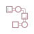
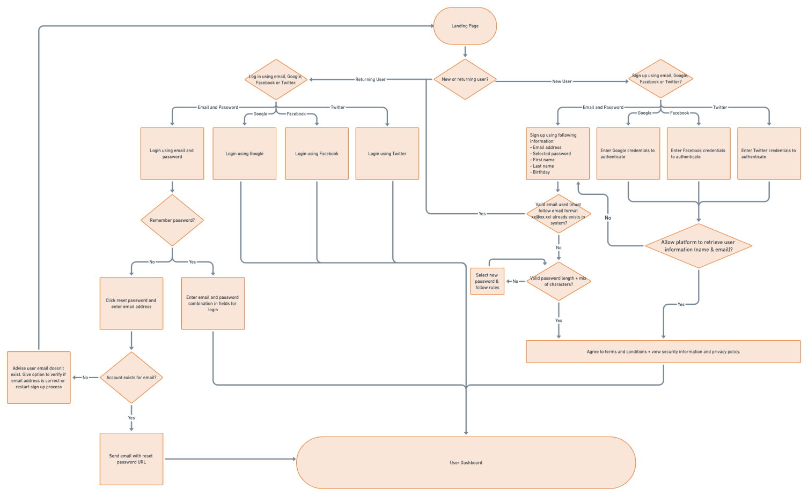
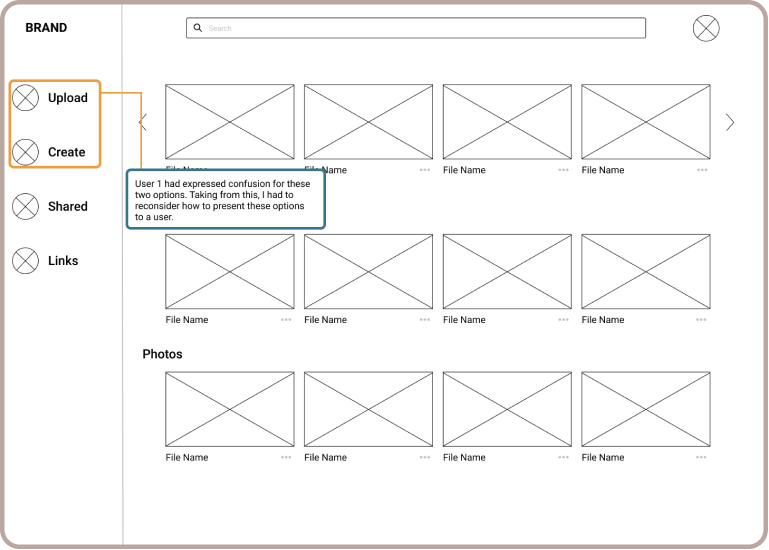
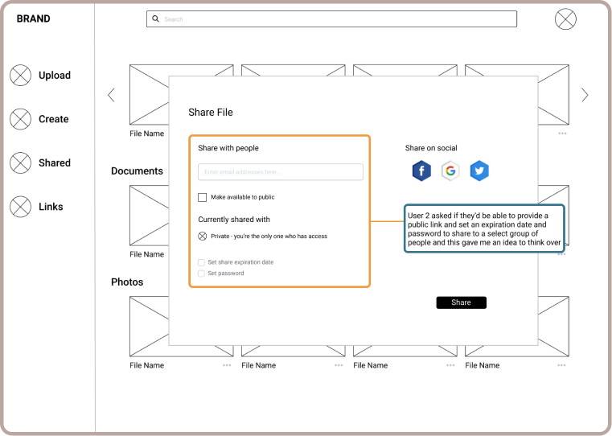
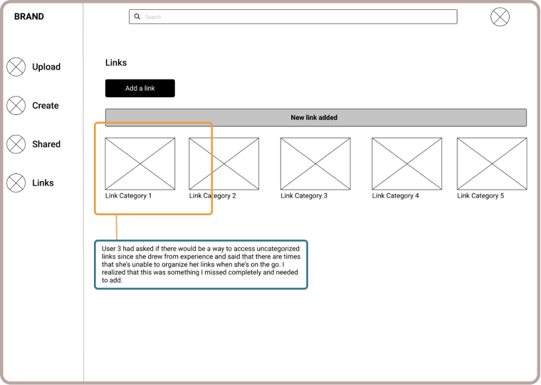
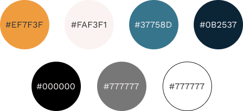
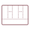
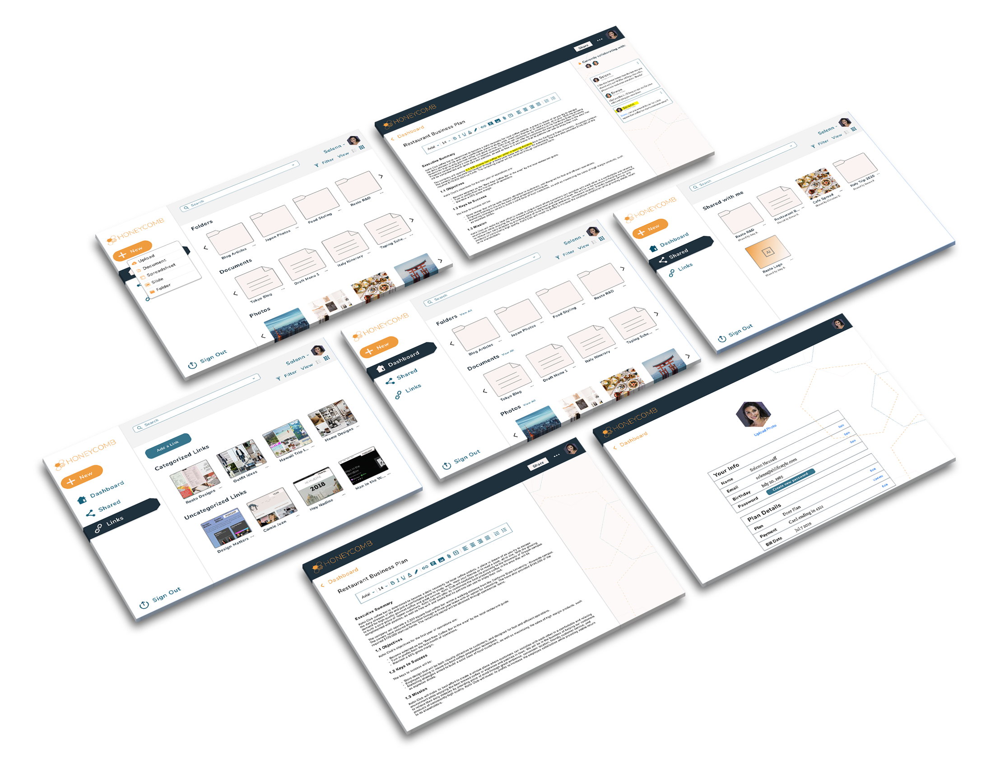
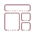

Design Role
UX Design
Visual Design
Branding & Identity
Design Deliverables
User Survey
Competitive Analysis
User Personas
User Stories & Flows
Wireframes
Wireframe Prototype
Brand Guidelines
Content Strategy
Hi-Fi Mockups
Usability Testing
Final Hi-Fi Prototype
Duration & Tools
5 Weeks
Figma
Sketch
Adobe Photoshop
Whimsical
InVision
UsabilityHub
Part I: Overview
What is Honeycomb?
Honeycomb is a cloud storage app that provides its users with a seamless way to create projects and store their files. Its core value is giving users the ability to jumpstart their projects by discovering resources within the platform and categorizing their documents, images, links and other files in one central place.
The Problem
Current cloud storage and organization products that are available to users have cluttered and busy dashboards and lack resources that they could use throughout the process that results to users relying on multiple platforms. They also lack simplicity and visibility when users try to locate a file or attempt to organize their content.
The Solution
To solve the problem at hand, Honeycomb was born from the following decisions:
- Have a less cluttered user interface that isn’t feature laden to avoid distractions and lessen user confusion when navigating through the platform.
- Be a secure space to allow community sharing so others could use public files as a resource which minimizes the need to hop from one platform to another.
- Enable the users ability to tag and categorize their content to ensure that they can organize their content efficiently and effectively so they can find what they need, when they need it.
Part II: Research & Discovery
User Survey
User research opens the gateway to understanding why the solutions
were carefully chosen. By getting to know the users, I was able to
tell what their current pain points were and what they wanted out of
a cloud storage service. Although I had formed assumptions of what I
felt users needed, only research would give me real and concrete
answers. I started the research process by posting a survey online
to multiple social media platforms, email contacts and friends.
Here are key highlights collected from survey data:
95% of the survey pool use cloud storage services
41% favored Google Drive while Dropbox and iCloud trailed behind at 20% respectively as preferred platforms.
When asked what features they value as important in a platform, 74% said they wanted upload content, 68% selected the ability to view and edit files, 64% chose sharing and security features and 63% wants to create content.
When asked about what they liked the most about their current cloud storage service they said:
- “It’s easy to use”
- “The convenience of it”
- “It’s free”
As far as their dislikes were concerned, they answered:
- “Too much clutter”
- “Files are saved one after the other, so they aren't organized and can get lost”
- “I have to use multiple platforms to get one thing done”
I learned critical things that I never knew about the survey participants. If I hadn’t researched, I would’ve gone with my initial theory of users wanting newer features and a better overall user experience. Surprisingly, I realized that users wanted a simple platform that would be easy to use and act as the one central place where they could have access to resources, create, edit or save content and collaborate.
Competitive Analysis
Now that I had learned more about my potential users, it was time to learn more about the competition. I looked into their strengths, weaknesses, opportunities and threats. No matter how successful these products were, I saw that I could still fill a pro and con list for all of them.

Dropbox’s most popular feature was their sync folder where users can automatically upload to the cloud and share with other devices but their downfall was the limited amount of free storage they offer to their users (2 GB) and absence of native productivity tools.
Google Drive on the other hand is a powerhouse for productivity tools and has strong brand recognition that exudes trustworthiness but, since they offer so much features, content that users create or store end up lost and hard to locate when needed.
Pinterest’s use of images are visually appealing and catches interest very quickly but the interface can easily feel cluttered and looking for a specific pinned item becomes a difficult feat due to many pin boards or uncategorized pins.
To recap, here’s the list of design decisions pulled from combing through research data:
- Address the trend of low discoverability amongst competitors by allowing users to categorize and tag their content
- Design an intuitive and minimalist interface that focuses on one action at a time to avoid distractions and user confusion
- Provide users the option to securely share their content with other users on the platform so they could act as a resource and vice versa
- Allow users to sign up quickly by using their email or social media account
- Build the MVP with a focus on showcasing important features
User Persona
With all this information laid out, it was time to translate the data from my user survey to create 2 primary personas. Both completely different from each other, but would be the epitome of Honeycomb’s target user
| Isabel | Jeremy |
|
Software & Asset Contract Manager 30 years old | New York, NY |
Photographer & Travel Blogger 24 years old | Los Angeles, CA |
| Motivations | Motivations |
| As a Software Asset & Contract Manager at New York University, Isabel leads a team and spends her time creating and sharing projects with her employees to ensure that everyone’s on the same page all the time. She’s also a graduate student who writes papers and saves reading material in the cloud since it’s convenient and in one central place. | Jeremy’s career brings him to all parts of the world and for convenient travel, requires him to pack light. He’s thankful for cloud storage since he can easily upload, back up and share files between all his devices. He wants to be able to save all his inspirations, write his blog posts and share his ideas with all the creatives out in the world. |
| Frustrations | Frustrations |
|
|
| “It’d be nice to get more transparency when it comes to collaborative usage.” | “Trying to find something using this interface is like searching for a needle in a haystack.” |
| Isabel |
|
Software & Asset Contract Manager 30 years old | New York, NY |
| Motivations |
| As a Software Asset & Contract Manager at New York University, Isabel leads a team and spends her time creating and sharing projects with her employees to ensure that everyone’s on the same page all the time. She’s also a graduate student who writes papers and saves reading material in the cloud since it’s convenient and in one central place. |
| Frustrations |
|
| “It’d be nice to get more transparency when it comes to collaborative usage.” |
| Jeremy |
|
Photographer & Travel Blogger 24 years old | Los Angeles, CA |
| Motivations |
| Jeremy’s career brings him to all parts of the world and for convenient travel, requires him to pack light. He’s thankful for cloud storage since he can easily upload, back up and share files between all his devices. He wants to be able to save all his inspirations, write his blog posts and share his ideas with all the creatives out in the world. |
| Frustrations |
|
| “Trying to find something using this interface is like searching for a needle in a haystack.” |
Part III: Information Architecture
 User Stories & Flow
After collecting and analyzing data and creating my personas, it was easier for me to compile a list of user stories . I ranked these stories by importance and focused on high priority tasks to reach the minimum viable product (MVP). These user stories would later on be translated into user flows to better show how the user would execute each task such as the example shown below:
“As a new user, I want to create an account by signing up with my email address + password of my choice”
Site Map & Content Strategy
Now that I had an idea of what users were looking for in a platform and how I wanted them to accomplish tasks, it was time to carefully decide where a user would find a feature they’re looking for by creating a sitemap. This ultimately helped me stay true to the design decisions I formed after research.

In addition to this, I had to draft what future customers would see,
read and most importantly, feel while using Honeycomb. Crafting
content strategy was made easier with the power of knowledge I had
acquired from the earlier stages of research, and would help during
the branding phase.
Sketches & Wireframes
My user flows allowed me to have a better idea on how the interface should look. That being said, I started translating my initial ideas into rough sketches which allowed me to explore ideas quickly and efficiently.

I used my sketches, user stories and sitemap to create low-fidelity wireframes in Figma that addressed the solution I had in mind. What was important to me was that users could easily find what they’re looking for - this is why having folders on the top and everything grouped into file type would make it easier for a user to locate what they needed, whenever they needed it.
Usability Testing
Prior to moving on to branding and high-fidelity mockups, I needed to consult with users through testing to see if my design decisions made sense. I used inVision to conduct both remote and in-person usability tests and wrote a test script so that my participants knew what they were getting themselves into and what to look out for.

This was an important step since I was able to receive feedback early on that would help me revise key action items. Here are some comments and suggestions received:
“I like that the interface is simple - it almost feels familiar. But I think the upload and create button is a bit confusing without icons. Maybe there’s an easier way to combine this?” - User 1
“The expiration date and password feature is perfect, especially if I can get a public link and set those parameters so that I can avoid having to enter individual email addresses” - User 2
“I like that there are link categories but where would uncategorized links go? The problem I run into is that I’m unable to categorize my links when I’m in a hurry so it may lessen my need to add links here if I’m forced to categorize it right away.” - User 3
Part IV: Branding & Identity
Why Honeycomb?
Science has already explained that it takes a lot of singular and group work for bees to create honeycomb and there’s a beauty towards the effort that bees have to put in to be able to come up with such uniformly structured honeycomb. This is the representation that the brand requires - ideating, creating and collaborating to come up with amazing work, every single time. Whether it’s just an individual looking for inspiration from publicly shared material so she or he can create something genius to groups coming together and tackling a big project, Honeycomb captures the concept of the brand.
Logo Design
Having decided the brand name, it was time to design a logo that would best represent Honeycomb as a cloud storage and organization service. I began this process by mind-mapping and sketching.
To stay consistent with the honeycomb theme, I focused on infusing pentagons in my logo. This decision led to bringing four pentagons together to produce a bee which would be recognizable. All pentagons coming together to form a bee represents the process of working together to conjure an idea, create and execute.

Color Palette
Honeycomb’s identity is minimalist and playful yet trustworthy in the cloud storage market. To best represent this, I chose the following colors so that Honeycomb users would feel these characteristics while on the platform. I selected 2 shades of blue to reflect its trustworthiness but in shades that felt modern while the orange and muted pale pink was chosen to imbibe energy and used selectively throughout the platform.
 Typography
Typography
Part V: Visual Design
 High-fidelity Mockups
Using my low-fidelity wireframes, I created the layout of Honeycomb’s interface focusing on the initial design decisions made and coupled it with feedback received through user testing.

 Preference Testing
Preference Testing
But that’s not where the road ends - I put my iterations to test by creating several A/B tests on UsabilityHub. The following tests were created to identify which display of elements and design choices were most popular and favored to better refine Honeycomb’s design.
- Landing page design preference test
- Button placement preference test
- Sign up modal design preference test
I applied the feedback received from preference tests to the design due since the users’ opinions are important and beneficial.
 Clickable Prototype
After receiving the results from my preference test, I went back to inVision to create a prototype and conducted 2 remote and 1 in-person scenario-based usability test to better see the product’s usability and understand users’ opinions. After analyzing the data, I observed the following things:
- All testers were able to conclude that Honeycomb is a cloud storage and collaborative platform
- The interface is straightforward and simple
- Publicly shared files feature is appealing to all participants
- Color scheme is professional, easy on the eyes and exudes trustworthiness
- There were no distractions or unnecessary clutter and Honeycomb has a very clean design
However, the following changes still had to be made based off the testers feedback:
- There were no distractions or unnecessary clutter and Honeycomb has a very clean design
- A “view all” option should be added to the dashboard: Testers stated that because there’s a scroll option, a “view all” option would make navigating the dashboard - and ultimately locating files, an easier task.
- The “share” button located in the document creator should be rounded: Testers noticed that this was the only button that still had sharp corners and recommended that the corners be rounded to maintain consistency across the platform.
Making these changes to the design finally paved a way for Honeycomb to come to life.
The Final Product
Part VI: Wrapping it All Up!
What I Learned
The importance of understanding and knowing what users want out of a product
Instead of going with my assumptions, I had to look to research in order to identify the goals of my target audience, the pain points they go through when trying to meet their goals and a solution that would hopefully eradicate their current pain points in their process.
Test, test, test and more tests!
User testing, whether it’s usability or preference tests hold the key to successfully refine the product. At the end of the day, it’s not about the client or the designer - the users are the core of the product. What better way is there but to continuously conduct tests to receive and gather feedback from users that would improve the product?
Scope creep is scary and can happen anytime
Coming up with an MVP is harder to do and scope creep can happen at anytime when many features/processes are considered. That being said, the next time I’m on a project, I need to constantly remind myself that I should design less user flows early on in the process so I could spend more time focusing on testing and refining fewer primary flows to ensure that everything is optimal and the best it could be.
If I Had More Time...
I would love to create additional pages to make the prototype more realistic and exceptional for users. In addition to this, other key features that I would’ve considered to add would be to showcase the power of using the search field when looking at publicly shared files so that users would better understand how this could work as a resource for them as individuals and as a team.
Let's talk!
Let's chat about how we can create stellar user experiences, or anything and everything about UX over a cup of coffee.